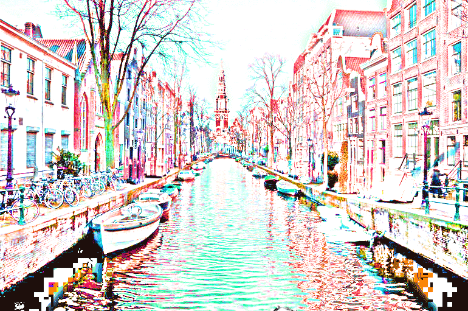

They were led by a twisted Evil Lord who hated Jewish people like Otto and his family. At first, after this gang came to power, nothing much changed. Then week by week, things got worse and worse for the Frank family and other Jews. There were attacks on Otto's friends and families' houses and shops. After a few weeks of these attacks, the time had come where it was no longer safe for Otto, Anne and the rest of the family to live in their own home town. Otto and his wife decided to move their daughters out of town, somewhere safe.
And so the Frank family moved on. They travelled miles and miles, to a land so flat you could see forever and to a magical city they found that was full of canals - man made rivers - where people would step out of their front door, step into a boat and go to school or work on the water, instead of walking on the street.
